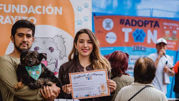
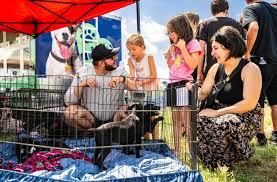
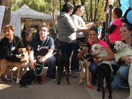
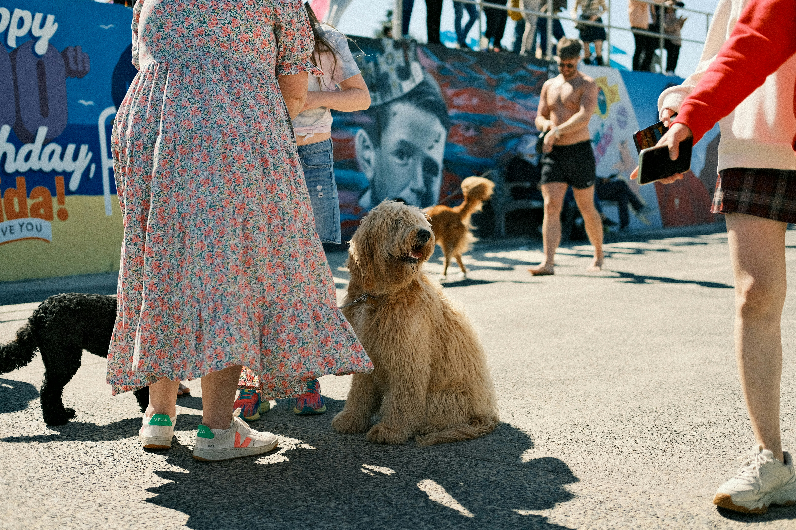

Momentos especiales de nuestros rescatados, sus familias y el equipo que hace posible esta misión.
*Patitas Felices es una fundación sin ánimo de lucro dedicada a rescatar, rehabilitar y encontrar hogares amorosos para animales en situación de vulnerabilidad. Desde nuestra creación en 2010, hemos trabajado incansablemente para transformar la vida de miles de perros y gatos, brindándoles una segunda oportunidad llena de amor y cuidado.
*Nuestra misión es promover el respeto y la tenencia responsable de mascotas, educando a la comunidad sobre la importancia de adoptar en lugar de comprar, y fomentando una cultura de empatía hacia los animales. A través de programas de rescate, campañas de concientización y eventos comunitarios, buscamos crear un impacto positivo en la vida de los animales y las personas que los rodean.
Rescatar, rehabilitar y encontrar hogares amorosos para animales en situación de vulnerabilidad, promoviendo el respeto y la tenencia responsable en nuestra comunidad.
Ser la fundación líder en bienestar animal, logrando un mundo donde cada mascota sea valorada como un miembro de la familia y el abandono sea cosa del pasado.



